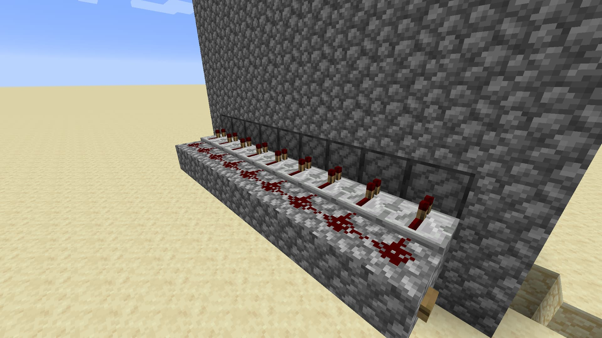

Ферма бамбуку
ферма бамбуку, ви напевно запитаете "навіщо мені бамбук?"все дуже просто, бамбук- це нескінченне топливо.
-
Знайдіть рівну поверхню та побудуйте фундамент для майбутньої ферми. Довжина та ширина форми: 11x3. Посередині фундаменту закладіть бруд або дерни.
-
Додайте 14 блоків вгору з бокових і задніх боків, спереду посередині залиште все як є. Стеля не будуйте. З лівого боку відступіть 2 блоки знизу і залиште щілину, спереду та ззаду відступивши 1 блок.
-
Щілина
-

Зробіть прилад до щілини шириною 2 блоки. На першому ряду прибудови (зліва направо) розкладіть червоний пил, на другому - повторювачі, двома червоними смолоскипами до щілини. У щілину закладіть поршні, передом усередину кімнати. Також поставте кнопку так, щоб вона активувала червоний пил.
-
Підкопайтеся під будівництво тобто під фундаментом і під брудом або дерном. Далі біля лівої стіни проставте вирви так, щоб одна переходила в іншу справа наліво, а остання (під блоком фундаменту) була накрита каменем і переходила в скриню. Вирви вийде 10
-
Залишилося тільки запечатати кімнату, засадити бамбуком та закрити ферму склом спереду та на стелі. Коли бамбук виросте, натисніть кнопку і чекайте врожаю в скрині